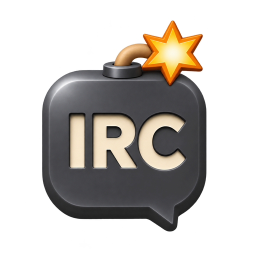

BlastIRC / design study
A quieter home for IRC.
Two static desktop wireframes inspired by Telegram Desktop, Apple Messages, and Noctalia Shell. Illustrative content, not a working client. Scroll horizontally on smaller screens.
Prototype controls are intentionally inert: icon buttons show layout, keyboard focus, and descriptive tooltips only; they do not search, connect, send, toggle panels, or control your window. Page navigation links still work.
A · Floating messenger
Conversation previews, soft message grouping, and a member list that opens on demand.

BLAST IRCLibera · #noctalia
Today
m
mia 14:30
What if the panels had a little breathing room?
Less chrome, more conversation.
New messages
Yes. Keep the network visible, lose the clutter.
3 joins / parts · Expand
Enter to send · Shift+Enter newline
● trev · ConnectedLibera · TLS · 42 ms
B · Quiet IRC workspace
Denser conversation, stable network groups, and visible members. Rounded surfaces without a bubble around every message.
BLAST IRC
miaWhat if the panels had a little breathing room?
Less chrome, more conversation.
samAnd keep the member list one click away.
New messages
trevYes. This should still feel like IRC.
3 joins / parts · Expand
● trev · ConnectedTab completes nicknames · / opens commands
Implementation direction · A navigation + B channel transcript
Use the floating messenger shell for Modern and Glass. Channels use a left-aligned grouped transcript; private conversations use incoming/outgoing bubbles. Hacker retains its compact presentation. These are design decisions for implementation, not features implemented by this page.
Icon controls
Use one line-icon family: 18-unit glyphs with a consistent stroke, centered in hit areas of at least 32 × 32 logical units. Neutral actions have no persistent border or fill; hover, keyboard focus, and the active People toggle provide emphasis. Keep channel and network names, filters, member counts, and connection state as text.
- Search / find conversation
- People / member list
- Split conversation
- More actions
- Settings
- Connect / add network
- Send message
- Text formatting
- Enter a command
- Minimize window
- Maximize window
- Close window
- Manage servers
These HTML buttons use title for browser hover tooltips and aria-label for accessible names; native browser tooltips are not reliably shown on keyboard focus or touch, so the visible legend also identifies every icon. The native client uses C++ Noctalia input/scene controls on Wayland, with hover and keyboard-focus tooltips, visible focus, and named, keyboard-operable actions; HTML attributes do not transfer to native controls. Preserve the application's own Wayland/xdg-shell surface and titlebar move/resize/minimize/maximize/close behavior. This HTML is a static visual reference, not a browser frontend or a replacement native implementation; UI-DESIGN.md is the current implementation contract.
Layout contract
- Keep the native title bar, existing docking system, network groups, split conversations, and status information. Do not build a second layout engine.
- At the existing 1440 × 940 initial size: 264-unit sidebar, 12-unit panel gaps, 16-unit content padding, 42-unit title bar. All dimensions are logical units, scaled once through the existing UI scale.
- Members are hidden by default and toggled from the active channel header. Reserve 200 units when visible. DMs do not show a channel member panel.
- At the existing 720 × 480 minimum: hide preview lines, use a 200-unit sidebar, and hide the People panel when it would leave less than 360 units for the conversation. Keep a visible People toggle; it can temporarily hide navigation to make room.
- Long names, topics, and previews truncate visually, never mutate stored text. Topic details remain accessible. The composer stays visible; history scrolls independently.
Interaction contract
- Sidebar search filters loaded buffer names and network names, not message history. Search inside a conversation remains a separate action.
- All / Unread / DMs filter within stable network groups. Switching filters or typing must not switch the active conversation or mark buffers read.
- Preview text uses the latest non-deleted conversational message already loaded locally. No new network requests or background history fetches.
- Selection, unread counts, and mentions have distinct indicators. Server connection errors remain accessible even when filters hide all conversations.
- Retain draft, completion, multiline paste confirmation, reply cancellation, history loading, and keyboard navigation behavior.
Required states
- No networks: a clear Connect action, not an empty three-column shell.
- No filter results: explain the active filter and offer Clear filters. Keep the current conversation open.
- Disconnected: show the affected network and existing error text; retain history and draft. Never imply that a queued message was delivered.
- History loading: preserve the viewport anchor and show loading near older history, not instead of the conversation.
- Unsupported server features: no invented typing, read receipts, reply acknowledgement, or reaction support.
The original A/B diagrams are references, not two new settings modes. Their illustrative “joins / parts · Expand” row is not a requirement to add event aggregation. Preserve existing presence-message behavior.